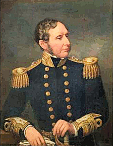

Who coined forecast?
A sentence in a book review in the Guardian on 13 June sent me to the Oxford English Dictionary: “FitzRoy was not the first European to establish a storm-warning system, but he coined the term ‘forecast’.” He did?
The reference is to Robert FitzRoy, who captained HMS Beagle on the famous voyage to explore and survey the coast of South America with Charles Darwin. He later became an admiral. FitzRoy was an early enthusiast for meteorology who in 1854 became head of a new government department that evolved into the Meteorological Office; he produced the first forecasts of stormy weather for shipping in 1861.
FitzRoy’s contribution to weather forecasting was marked internationally in 2002 when the shipping forecast area to the west of the Bay of Biscay known as Finisterre was renamed in his honour.
FitzRoy used forecast because, as he commented in 1863 in The Weather Book: A Manual of Practical Meteorology, “Prophecies and predictions they are not. The term forecast is strictly applicable to such an opinion as is a result of scientific combination and calculation.”
Other writers similarly claim FitzRoy invented forecast but they are wrong. The Oxford English Dictionary does cite a letter he wrote to The Times in April 1862 as its first example in the sense of weather forecasting, but the noun has been recorded since at least the late seventeenth century, having been derived from the much older verb.
Those that perpetuate the story presumably think in this way: Admiral FitzRoy invented the weather forecast, therefore he must also have invented the word forecast. It is probably much too late to expunge this folk etymology from the public mind.
From an article onWorld Wide Words